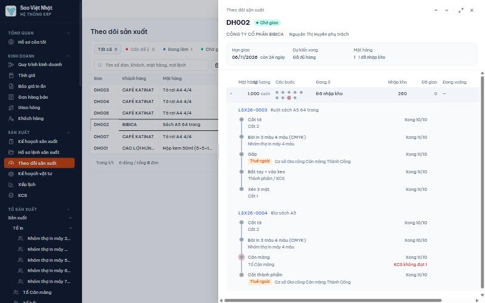
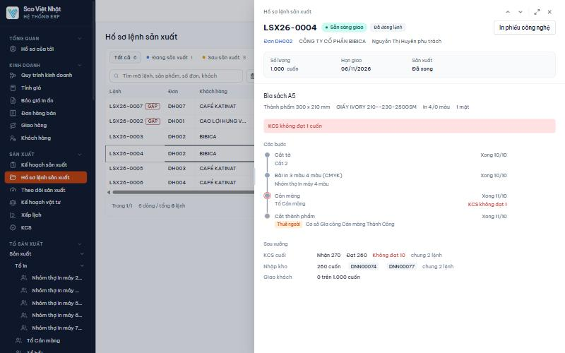
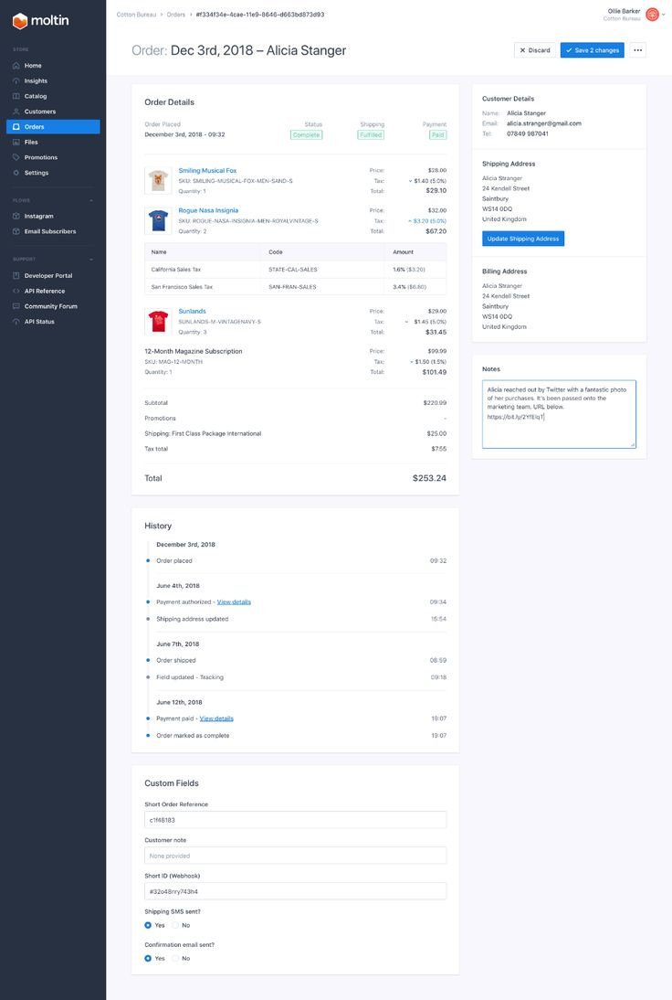
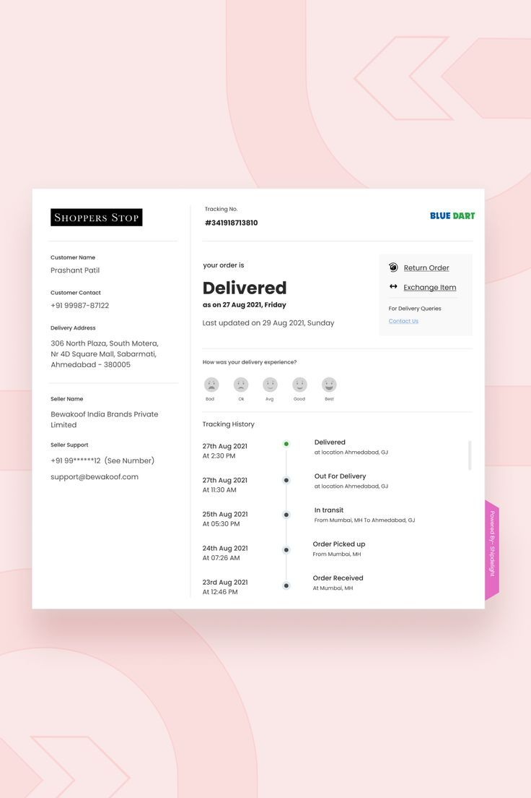
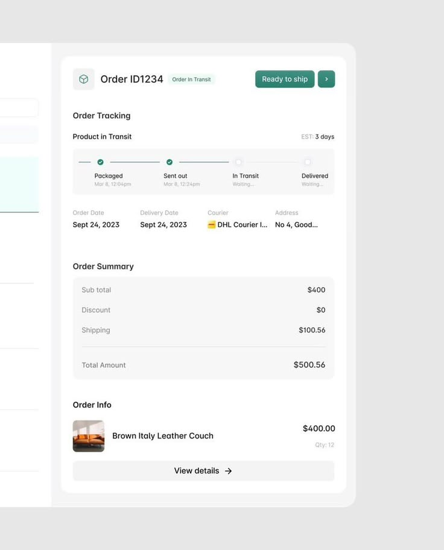
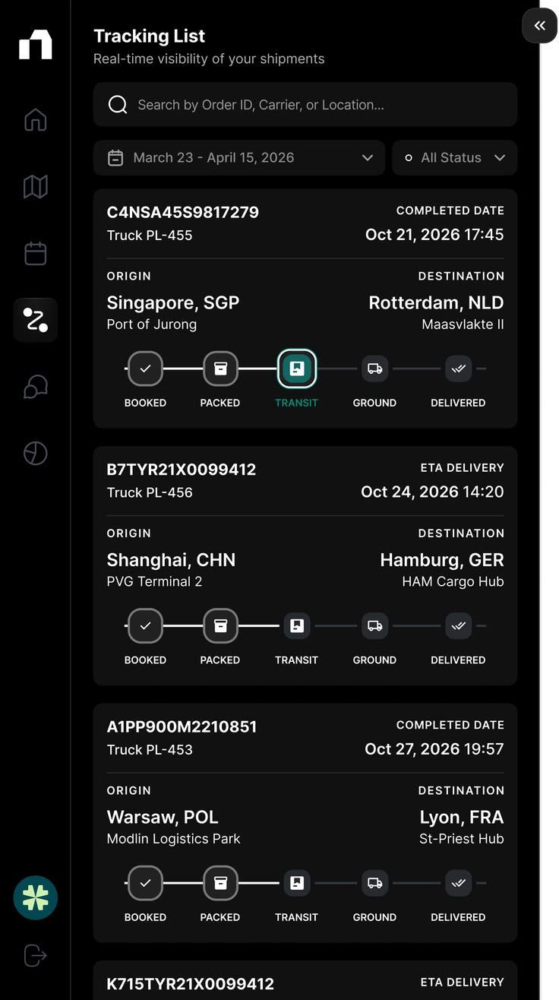
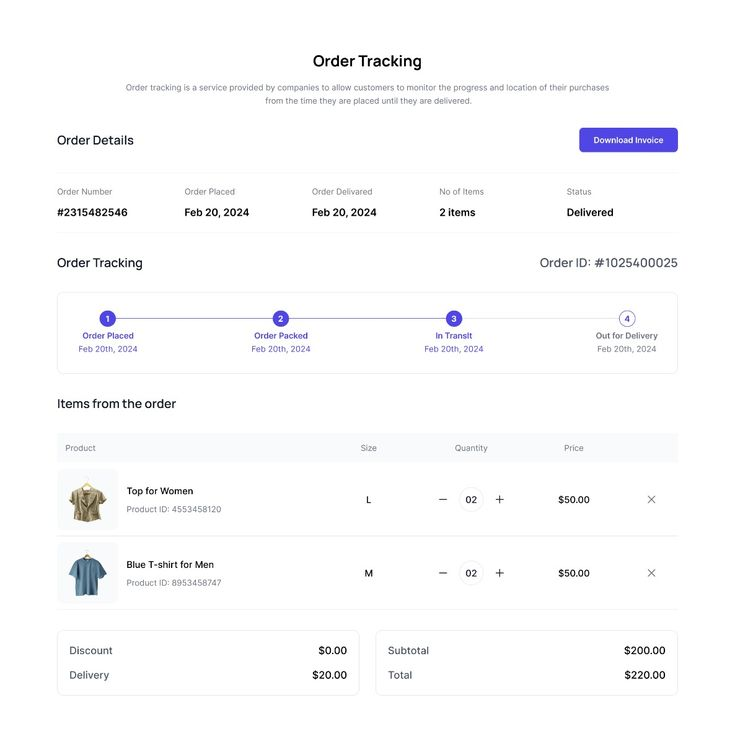
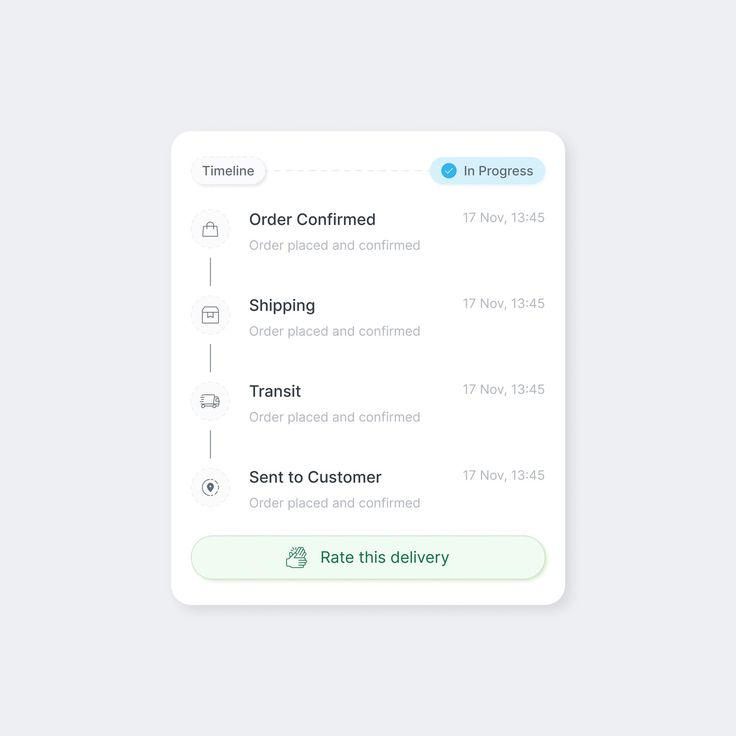

Ngăn chi tiết: Hồ sơ lệnh sản xuất và Theo dõi sản xuất
Ba phương án cho CẢ HAI ngăn (ngăn MỘT lệnh mở từ Hồ sơ lệnh, ngăn MỘT đơn mở từ Theo dõi sản xuất). Mỗi phương án bám một ảnh tham khảo Pinterest. Số trong mockup là số thật của DB dev svn_erp_trong ngày 13/10/2026: lệnh LSX26-0003 (Ruột sách A5 64 trang) và đơn DH002 (BIBICA). Dòng nền vàng nhạt là ca giả định để thử đơn nhiều mặt hàng.
Đã đọc gì trước khi vẽ
FE: LenhSxNgan.tsx, TdsxNganDon.tsx, lsxRoutingDoc.tsx (routing dọc dùng chung), tdsxDon.ts.
BE: LenhSxNganOut và LenhSxHoSoOut (hồ sơ đầy đủ, endpoint GET /lenh-san-xuat/{id} vẫn còn sống), DonChiTietOut của GET /theo-doi-san-xuat/theo-don/{id}.
Dữ liệu thật của LSX26-0003, LSX26-0004, LSX26-0005 qua chính service hồ sơ (chỉ đọc): routing có giờ kế hoạch và giờ xong, số vào/ra từng bước, máy và người, sản lượng từng lần ghi, KCS từng lần, sự cố, phiếu nhập kho, 49 dòng nhật ký.
Mockup trước của hai màn (ho-so-lenh-san-xuat-3-phuong-an.html, theo-doi-don-san-xuat-3-phuong-an.html, chọn A ngày 12/10) và ngăn đơn hàng bán A bản 3.
Ngăn hiện tại và chỗ hỏng

Ngăn đơn DH002 hôm nay. Đầu bảng "Mặt hàng" và "Số lượng" chồng lên nhau, cột tên mặt hàng bị bóp mất chữ, có thanh cuộn ngang. Không có tab, không có Lịch sử. Đơn chỉ có 1 mặt hàng mà nửa dưới là hai routing dọc dài.

Ngăn lệnh LSX26-0004 hôm nay. Ô "Sản xuất: Đã xong" và chip "Sẵn sàng giao", nhưng không nói đã làm ra bao nhiêu. Không có tab, không Lịch sử, không sự cố dù lệnh có 2 sự cố và 1 lần tạm dừng.
Thông tin đáng bổ sung (lấy từ số thật)
Làm ra bao nhiêu so với đặt. LSX26-0003 đặt 1.000 cuốn, mọi bước đã "xong" nhưng bước cuối Xén 3 mặt chỉ ghi 270 cuốn, KCS đạt 260, kho nhận 260. Màn hiện báo "Đã xong" và "Đủ hàng, chờ giao". Kinh doanh nhìn sẽ tưởng đủ 1.000. Đây là thông tin đáng thêm nhất.
Từng bước: làm ra so với kế hoạch, giờ xong kế hoạch so với giờ xong thật, máy, người. Cắt tờ kế hoạch 4.150 tờ, ghi 250. Đã có sẵn trong hồ sơ đầy đủ.
Sự cố và tạm dừng (LSX26-0004: YC-0005, YC-0006 ở Cán màng, máy cán màng 1080 số 1, tạm dừng 11/10 05:45).
KCS từng lần và phiếu nhập kho từng phiếu kèm giờ kho nhận.
Quy cách đủ cho lệnh: khổ giấy nguyên, khổ in, số con, số kẽm, trang mỗi tay, tờ kế hoạch.
Lịch sử: theo luật ngăn chi tiết phải có tab này. 24 dòng "Giao X vào Bắt tay" gộp thành một dòng "Giao 24 người vào Bắt tay + vào keo".
Vẫn giữ: không một số tiền nào, không chữ đậm, không nối bằng dấu chấm giữa, ngăn rộng 1180px như mọi ngăn.
Tham khảo Pinterest (đã mở và chụp)

P2. Moltin, trang đơn hai cột. Cột chính là nội dung chính (hàng, tổng), cột phải hẹp là thẻ thông tin phụ xếp chồng, Lịch sử gom theo ngày, giờ canh phải. Học được: thông tin "đọc một lần" đẩy sang cột phải, cột chính chỉ còn thứ cần so. Phương án A.

P3. Trang theo dõi giao hàng. Một câu trạng thái chữ to ở trên ("Delivered" kèm ngày), dưới là lịch sử dọc: ngày giờ bên trái, chấm, việc bên phải; cột trái hẹp là thông tin người nhận. Học được: trả lời "đang ở đâu" bằng MỘT câu to trước, chi tiết để sau. Phương án B.

P4. Thẻ đơn gọn. Thanh bước ngang, dưới mỗi chấm là giờ đã qua hoặc "Waiting"; dưới thanh là hàng bốn ô nhãn nhỏ, giá trị to. Học được: thanh bước kèm giờ thay được cả một bảng mốc. Phương án C (ngăn lệnh).

P5. Danh sách chuyến hàng. Mỗi chuyến một thẻ: mã và ngày ở đầu, năm chặng có biểu tượng, chặng hiện tại viền sáng. Học được: nhiều món thì mỗi món một thẻ cùng khuôn, mắt quét dọc rất nhanh. Phương án C (ngăn đơn).

P1. Order Tracking. Hàng năm ô dữ kiện (số đơn, ngày đặt, ngày giao, số món, trạng thái) đứng trên thanh bước. Học được: dữ kiện đầu ngăn để cột mở, không đóng hộp. Dùng cho đầu ngăn cả ba phương án.

P6. Thẻ Timeline. Mỗi việc một dòng, tên việc, mô tả xám nhỏ, giờ canh phải. Học được: tab Lịch sử không cần biểu tượng hay màu, một cột chữ là đủ. Dùng cho tab Lịch sử của A và C.
Đã mở mà bỏ: các bảng điều khiển nền tối nhiều biểu đồ tròn ("MES dashboard", "ERP Dashboard") vì là màn tổng, không phải ngăn một lệnh; các mẫu Gantt ("job progress timeline") vì Xếp lịch đã làm việc đó.
Phương ánNgăn
A. Ngăn lệnh hai cột (khuôn Moltin)
Tab Tổng quan | Lịch sử. Cột chính: dải Sản lượng (đặt, làm ra, đạt KCS, nhập kho, đã giao) có chân xám nói thẳng còn thiếu bao nhiêu, rồi bảng Các bước (tổ và máy, làm ra trên kế hoạch, giờ xong kế hoạch, giờ xong thật). Cột phải 330px: Lệnh, Quy cách đủ, Nhập kho và KCS cuối. Lệnh có sự cố thì thêm thẻ Sự cố đầu cột phải.
Hợp khi người đọc muốn thấy hết trong một màn. Nhược: cột chính là bảng 6 cột, lệnh 8 bước vẫn vừa nhưng dày.
B. Ngăn lệnh: câu trạng thái to và hành trình (khuôn trang theo dõi giao hàng)
Tab Hành trình | Các bước | Quy cách. Đầu tab là một câu chữ to "270 trên 1.000 cuốn" kèm câu giải thích, hộp xám bên phải có hạn giao và đã giao. Dưới là cột trái hẹp (đơn, khách, nhóm, máy và người) và hành trình dọc theo giờ: mỗi bước xong, mỗi lần KCS, mỗi phiếu nhập kho, sự cố, tạm dừng. Tab Các bước giữ routing dọc đang có, thêm số làm ra.
Hợp với kinh doanh: đọc một câu là biết. Nhược: muốn so các bước với nhau phải sang tab khác.
C. Ngăn lệnh: thanh bước ngang và bảng bung (khuôn thẻ đơn gọn)
Tab Tổng quan | Quy cách | Lịch sử. Trên cùng là thanh bước ngang gồm các bước xưởng, vạch ngăn, rồi KCS cuối, Nhập kho, Giao; dưới mỗi chấm là giờ xong và số làm ra. Chấm viền cam là bước làm ra ít hơn kế hoạch. Hàng bốn ô dữ kiện, rồi bảng Từng bước: bấm một bước bung ra các lần ghi sản lượng, người, máy, KCS của bước.
Hợp với chủ xưởng: thấy hết chuỗi, bấm vào bước nào xem bước đó. Nhược: lệnh trên 10 bước thì thanh ngang chật, phải cho chữ xuống dòng.
A. Ngăn đơn hai cột (khuôn Moltin)
Tab Tổng quan | Lịch sử. Cột chính: bảng Mặt hàng có cột mới Làm ra, Còn thiếu; bấm một món bung các lệnh của món, mỗi lệnh một dòng tuyến chấm kèm làm ra trên kế hoạch và chỗ vướng. Cột phải: Đơn (hạn giao, dự kiến xong, ngày phát lệnh), Đang vướng, Giao hàng.
Đơn 20 món: bảng 20 dòng, chip lọc món như hiện nay; cột phải đứng yên.
B. Ngăn đơn: câu trạng thái to và hành trình
Tab Hành trình | Mặt hàng. Câu to "260 trên 1.000 cuốn đã vào kho", câu giải thích vì sao còn thiếu. Hành trình gộp việc của mọi lệnh trong đơn, mỗi dòng có thẻ tên lệnh (Ruột, Bìa). Tab Mặt hàng là bảng như A.
Đơn 20 món: hành trình dài và lẫn món, nên phải có ô lọc theo món. Đây là chỗ yếu nhất của B.
C. Ngăn đơn: mỗi món một thẻ năm chặng (khuôn danh sách chuyến hàng)
Tab Mặt hàng | Lịch sử. Mỗi món một thẻ: tên, số đặt, hạn; năm chặng có biểu tượng Lên lệnh, Sản xuất, KCS, Nhập kho, Giao, dưới mỗi chặng là số và ngày; dưới nữa là các lệnh của món một dòng một lệnh. Chặng thiếu số so với đặt viền cam.
Đơn 20 món: thẻ món đã xong tự gập về một dòng (tên, số, "Đã giao đủ"), món còn sống mở sẵn.
Hồ sơ lệnh sản xuất↑↓⤢✕
LSX26-0003
Sau sản xuấtĐã đóng lệnh
Đơn DH002CÔNG TY CỔ PHẦN BIBICANguyễn Thị Huyên phụ trách
Tổng quanLịch sử15
Sản lượngRuột sách A5 64 trang
Đặt
1.000cuốn
Làm ra
270
27% số đặt
Đạt KCS
260
10 không đạt
Nhập kho
260
2 phiếu
Đã giao
0
Mọi bước đã kết thúc nhưng mới làm ra 270 trên 1.000 cuốn. Còn thiếu 730 cuốn, chưa có lệnh nào làm tiếp.
Giao 28 người vào 4 bướcBắt tay + vào keo 24 người, Bài in 2, Cắt tờ 1, Xén 3 mặt 1
22:22
Phát hành phiên bản 1Admin
Hồ sơ lệnh sản xuất↑↓⤢✕
LSX26-0003
Sau sản xuấtĐã đóng lệnh
Ruột sách A5 64 trang
Hành trìnhCác bước5Quy cách
Cập nhật 12/10 20:10
270 trên 1.000 cuốnđã làm ra
Cả 5 bước đã kết thúc, bước cuối Xén 3 mặt xong 11/10 10:42 và làm thêm 20 cuốn ngày 12/10. KCS cuối đạt 260, kho đã nhận đủ 260. Còn thiếu 730 cuốn, chưa có lệnh nào làm tiếp.
Hạn giao
06/11/2026còn 24 ngày
Nhập kho
260 cuốn
Đã giao
0 cuốn
Đơn
DH002CÔNG TY CỔ PHẦN BIBICANguyễn Thị Huyên phụ trách
BìaCán màng tạm dừng, sự cố YC-0005 và YC-0006Máy cán màng 1080 số 1
10/1022:49
BìaXong Bài in 4 màu
10/1022:22
Phát 2 lệnh xuống xưởng
Bảng mặt hàng giống phương án A (Đặt, Làm ra, Nhập kho, Đã giao, Còn thiếu, bấm bung lệnh).
Theo dõi sản xuất↑↓⤢✕
DH002
Chờ giao
CÔNG TY CỔ PHẦN BIBICANguyễn Thị Huyên phụ trách
Mặt hàng1Lịch sử9
Hạn giao
06/11/2026còn 24 ngày
Dự kiến xong
Chưa ước đượcxưởng đã dừng
Phát lệnh
10/10 22:222 lệnh
Lượt giao
Chưa có
Sách A5 64 trang1.000 cuốnThiếu 740 cuốn
Lên lệnh
2 lệnh
10/10
Sản xuất
270 / 1.000
dừng 11/10
KCS cuối
đạt 260
lỗi 10
Nhập kho
260
12/10
Giao
0
chưa có lượt
LSX26-0003Ruột, xong 11/10 10:42270 / 1.000 cuốnLSX26-0004Bìa, Cán màng 2 sự cố, KCS không đạt 11.320 bìa
Hộp kem 50ml3.000 cáiTạm dừng ở Bế
Lên lệnh
1 lệnh
08/10
Sản xuất
bước 3 trên 5
dự kiến 15/10
KCS cuối
0
Nhập kho
0
Giao
0
▸Danh thiếp10 hộpĐã giao đủ
▸Tờ rơi A52.000 tờĐã giao đủ
Giống tab Lịch sử của ngăn đơn phương án A (thẻ tên lệnh trước mỗi dòng).
Cần chốt thêm ngoài bố cục
Chip "Sẵn sàng giao" và "Chờ giao, Đủ hàng" đang lấy theo "mọi bước đã kết thúc", không theo số làm ra. Với LSX26-0003 là sai nghĩa (260 trên 1.000). Mockup giữ chip cũ và để số nói sự thật; nếu muốn đổi luật chip thì đó là việc logic riêng.
LSX26-0003 và LSX26-0004 đều đã xong mà đèn "thiếu vật tư" vẫn bật (cờ thieu_vat_tu). Ngăn mới chỉ hiện "Đang vướng" khi lệnh còn đang làm, nên sẽ không hiện cờ này; còn cờ sai thì cần xem riêng.